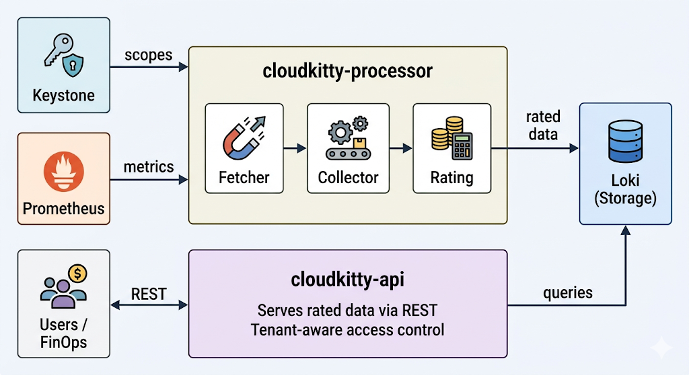

Overview of the chargeback process flow
The Core Chargeback Workflow
At its heart, the chargeback process in RHOSO can be simplified into a three-step workflow:
-
Set Rating Rules
-
Collect Metrics
-
Generate Rating Reports
Let’s delve into each of these steps to understand how usage is transformed into actionable cost data.

1. Defining and Setting Rating Rules
The initial and perhaps most critical step in the chargeback process is defining the rating rules. These rules act as the "translation layer" that converts abstract technical usage data (like CPU hours or storage consumption) into concrete monetary values. Without these rules, raw metrics lack financial context.
-
Technical Explanation: Rating rules are configured within CloudKitty to specify how different resource types and their attributes should be costed. For example, you might define a rule that charges
$0.05per CPU hour for a specific virtual machine (VM) flavor, or$0.01per GB per month for block storage. These rules can be highly granular, allowing for differentiation based on resource type (res_type), specific attributes (likeflavor_id), or even time-based usage. -
Purpose: These rules are essential for:
-
Providing a clear pricing model for internal cloud services.
-
Allowing for flexible cost allocation based on business needs and service tiers.
-
Enabling accurate cost recovery by linking actual consumption to predefined rates.
-
| The concept of defining rating rules is foundational. Complex chargeback scenarios often involve multiple, layered rules to accurately reflect varying service costs and agreements. |
2. Collecting Usage Metrics
Once rating rules are in place, the system needs continuous streams of usage data to apply these rules against. RHOSO’s Rating service integrates with the underlying OpenStack monitoring infrastructure to gather these essential metrics.
-
Technical Explanation: CloudKitty acts as a consumer of various metrics generated by OpenStack services. Typically, Ceilometer collect performance and usage data from across the OpenStack environment, such as CPU utilization, disk I/O, network traffic, and instance uptime. CloudKitty ingests this raw technical data, like how many hours a VM ran (
ceilometer_cpu) or how much storage was consumed. -
Purpose: This step ensures that the chargeback calculations are based on actual, observed resource consumption, providing an objective basis for billing.
3. Generating Chargeback Reports
With rating rules defined and usage metrics continuously flowing, CloudKitty’s core function comes into play: processing the metrics against the rules to generate comprehensive chargeback reports.
-
Technical Explanation: CloudKitty’s rating engine continuously evaluates the incoming usage metrics against the active rating rules. It then calculates the cost associated with each resource’s consumption based on the configured rates. The output of this process is structured chargeback data, often aggregated and formatted for easy consumption by financial systems. These reports typically include details such as tenant ID, resource type, consumption period, and the calculated cost (
rate). -
Illustrating Report Generation: You can query CloudKitty’s API to retrieve aggregated chargeback summaries. The
report/summaryendpoint, for instance, provides a high-level overview.[source,bash] ---- curl -X GET \ -H "X-Auth-Token: $TENANT_TOKEN" \ "http://localhost:8888/v1/report/summary?begin=2026-02-01T00:00:00&end=2026-03-01T00:00:00&groupby=res_type" ----
The output is typically a JSON object that cleanly lays out the resource type, the time period, and the total calculated units/cost:
[source,json] ---- { "summary": [ { "tenant_id": "MoD-project-uuid", "res_type": "ceilometer_cpu", "begin": "2026-02-01T00:00:00", "end": "2026-03-01T00:00:00", "rate": 125.50 } ] } ----In this example, for the "MoD-project-uuid" tenant, `ceilometer_cpu` usage between February 1st and March 1st, 2026, incurred a total charge of `125.50` units (which could represent dollars, credits, or any defined monetary unit).
-
CLI and Formatting Flexibility: In addition to direct API queries, you can utilize the OpenStack CLI to generate these reports. The CLI natively supports extracting chargeback data into several formats to match your workflow requirements: {csv, df-to-csv, json, table, value, yaml}.
-
Purpose: These reports, accessible via both the API and CLI, serve as the primary output for financial reconciliation. They provide the transparent, itemized breakdown necessary for internal billing, cost recovery, and financial analysis.
| While CloudKitty generates detailed chargeback reports, it acts purely as a visibility and rating engine. It does not actively enforce budgets or block resource creation (e.g., Nova instances) if a tenant exceeds a certain cost threshold. Its role is to provide the data, not to manage policies. |
4. Closing the Loop: Integration with Financial Systems
The final, crucial step in the chargeback process flow is the integration of these generated reports with an enterprise’s broader financial software. By funneling this structured, aggregated JSON data directly into your existing FinOps or billing solutions, you successfully close the loop between raw infrastructure consumption and cost accountability.